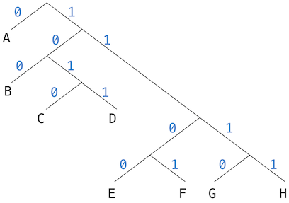

Extra Homework 1
Due by 11:59pm on Monday, 10/12
Instructions
Download extra01.zip. Inside the archive, you will find a file called extra01.py, along with a copy of the OK autograder.
Submission: When you are done, submit with
python3 ok --submit. You may submit more than once before
the deadline; only the final submission will be scored.
Using OK
The ok program helps you test your code and track your progress.
The first time you run the autograder, you will be asked to log in with your
@berkeley.edu account using your web browser. Please do so. Each time you run
ok, it will back up your work and progress on our servers.
You can run all the doctests with the following command:
python3 okTo test a specific question, use the -q option with the
name of the function:
python3 ok -q <function>By default, only tests that fail will appear. If you
want to see how you did on all tests, you can use the -v
option:
python3 ok -vIf you do not want to send your progress to our server or you have any
problems logging in, add the --local flag to block all
communication:
python3 ok --localWhen you are ready to submit, run ok with the
--submit option:
python3 ok --submitReadings: You might find the following references useful:
Newton's Method
Question 1
Implement intersect, which takes two functions f and g and their
derivatives df and dg. It returns an intersection point x, at which
f(x) is equal to g(x).
def intersect(f, df, g, dg):
"""Return where f with derivative df intersects g with derivative dg.
>>> parabola, line = lambda x: x*x - 2, lambda x: x + 10
>>> dp, dl = lambda x: 2*x, lambda x: 1
>>> intersect(parabola, dp, line, dl)
4.0
"""
"*** YOUR CODE HERE ***"Huffman Encoding Trees
Introduction
We consider the problem of representing text as a sequence of ones and zeros
(bits). As a simpler example, consider encoding an alphabet consisting of only
A, B, C, D, E, F, G, and H. We can choose a code with three
bits per character. For example:
A 000C 010E 100G 110B 001D 011F 101H 111
With this code, the 18-character message:
BACADAEAFABBAAAGAH
is encoded as the string of 54 bits:
001000010000011000100000101000001001000000000110000111
Codes such as the A-through-H code above (and
ASCII)are known as fixed-length
codes, because they represent each symbol in the message with the same number
of bits. It is sometimes advantageous to use variable-length codes, in
which different symbols may be represented by different numbers of bits. If our
messages are such that some symbols appear very frequently and some very
rarely, we can encode data more efficiently (i.e., using fewer bits per
message) if we assign shorter codes to the frequent symbols. Consider the
following alternative code for the letters A through H:
A 0C 1010E 1100G 1110B 100D 1011F 1101H 1111
With this code, the same message as above is encoded as the string:
100010100101101100011010100100000111001111
This string contains 42 bits, so it saves more than 20% in space in comparison with the fixed-length code shown above.
One of the difficulties of using a variable-length code is knowing
when you have reached the end of a symbol in reading a sequence of
zeros and ones. One solution is to design the code in such a way that
no complete code for any symbol is the beginning (or prefix) of the
code for another symbol. Such a code is called a prefix code. In
the example above, A is encoded by 0 and B is encoded by 100,
so no other symbol can have a code that begins with 0 or with 100.
In general, we can attain significant savings if we use variable-length prefix codes that take advantage of the relative frequencies of the symbols in the messages to be encoded. One particular scheme for doing this is called Huffman encoding, after its discoverer, David Huffman. A Huffman code can be represented as a binary tree whose leaves are the symbols that are encoded.
Each symbol at a leaf is assigned a weight (its frequency), and each non-leaf node contains a weight that is the sum of all the weights of the leaves lying below it. The weights will be used to help construct the tree.
The figure below shows the Huffman encoding tree for the
A-through-H prefix code given above. The weights at the leaves
indicate that the tree was designed for messages in which A appears
with frequency 8, B with frequency 3, and the other letters each
with frequency 1.

Decoding
To decode a bit sequence using a Huffman tree, we begin at the root and use the successive zeros and ones of the bit sequence to determine whether to move down the left or the right branch. Each time we come to a leaf, we have generated a new symbol in the message, at which point we start over from the root of the tree to find the next symbol.
For example, suppose we are given the tree above and the sequence
10001111Starting at the root, we move down the right branch, (since the first
bit of the string is 1), then down the left branch (since the second
bit is 0), then down the left branch (since the third bit is also 0).
This brings us to the leaf B, so the first symbol of the decoded
message is B.
Now we start again at the root, and we make a left move because the
next bit in the string is 0. This brings us to the leaf A. Then we
start again at the root with the rest of the string 1111, so we move
right, right, right, right and reach H. Thus, the entire message is
BAH.
Encoding
Given a Huffman tree, we can enumerate all encodings by traversing the
tree. That is, we can write a function that takes the Huffman tree as
input and returns a dictionary that maps letters (e.g. A) to codes
(e.g. 0). Then, encoding a message involves concatenating the code
for each letter in the message.
Generating Huffman Encoding Trees
Given an alphabet of symbols and their relative frequencies, how do we construct the tree that will encode messages with the fewest bits? Huffman gave an algorithm for doing this and showed that the resulting code is indeed the optimal variable-length code (for messages where the frequency of the symbols to be encoded matches the frequencies with which the Huffman tree was constructed). You can read more about the story of how Huffman encoding came to be here.
The algorithm for generating a Huffman tree is very simple. The idea is to arrange the tree so that the symbols with the lowest frequency appear farthest away from the root. Start with the set of leaf nodes, containing symbols and their frequencies in some initial data. Now, find two nodes with the smallest weights and merge them to produce a new node, with these two nodes as its left and right branches. The weight of the new node is the sum of the two weights. Remove the two leaves from the original set and replace them with this new node.
Repeat. At each step, merge two nodes with the smallest weights, removing them from the set and replacing them with a node that has these two as its left and right branches. The process stops when there is only one node left, which is the root of the entire Huffman tree.
Wikipedia has an excellent animation of this process.
Here is how the previous example Huffman tree is generated, where trees are described by the set of letters they contain, along with their weight:
Initial leaves:
{(A 8) (B 3) (C 1) (D 1) (E 1) (F 1) (G 1) (H 1)}Trees after...
Step 1: {(A 8) (B 3) ({C D} 2) (E 1) (F 1) (G 1) (H 1)}
Step 2: {(A 8) (B 3) ({C D} 2) ({E F} 2) (G 1) (H 1)}
Step 3: {(A 8) (B 3) ({C D} 2) ({E F} 2) ({G H} 2)}
Step 4: {(A 8) (B 3) ({C D} 2) ({E F G H} 4)}
Step 5: {(A 8) ({B C D} 5) ({E F G H} 4)}
Step 6: {(A 8) ({B C D E F G H} 9)}
Step 7: {({A B C D E F G H} 17)}
The algorithm does not always specify a unique tree, because there may not be unique smallest-weight nodes at each step. Also, the choice of the order in which the two nodes are merged (i.e., which will be the right branch and which will be the left branch) is arbitrary.
Huffman trees are represented by the following data abstraction, which is
defined in terms of the tree data abstraction from lecture:
# Huffman encoding trees
def huffman_leaf(letter, weight):
"""A leaf of a Huffman tree, which has a weight at the root."""
return tree(weight, [tree(letter)])
def huffman_tree(left, right):
"""A Huffman encoding tree; left and right are also Huffman trees."""
return tree(root(left) + root(right), [left, right])
def weight(tree):
"""The weight of a Huffman encoding tree."""
return root(tree)
def is_huffman_leaf(tree):
"""Whether this Huffman tree is a Huffman leaf."""
return not is_leaf(tree) and is_leaf(branches(tree)[0])
def letter(leaf):
"""The letter of a Huffman leaf."""
return root(branches(leaf)[0])The A-through-H code above can be implemented as:
CD = huffman_tree(huffman_leaf('c', 1), huffman_leaf('d', 1))
EF = huffman_tree(huffman_leaf('e', 1), huffman_leaf('f', 1))
GH = huffman_tree(huffman_leaf('g', 1), huffman_leaf('h', 1))
EFGH = huffman_tree(EF, GH)
BCD = huffman_tree(huffman_leaf('b', 3), CD)
BCDEFGH = huffman_tree(BCD, EFGH)
example_tree = huffman_tree(huffman_leaf('a', 8), BCDEFGH)Question 2
Implement letters, which returns the letters of a Huffman encoding tree in
the numerical order of their encodings.
def letters(tree):
"""Return a list of all letters encoded in Huffman encoding TREE.
>>> letters(example_tree)
['a', 'b', 'c', 'd', 'e', 'f', 'g', 'h']
"""
"*** YOUR CODE HERE ***"Question 3
Implement decode_one, which takes as arguments a Huffman tree and a list of
0's and 1's (bits). It returns the first encoded letter in code, while
removing its corresponding bits:
def decode(tree, code):
"""Decode CODE, a list of 0's and 1's using the Huffman encoding TREE.
>>> decode(example_tree, [1, 0, 0, 0, 1, 1, 1, 1])
'bah'
"""
word = ''
while code:
word += decode_one(tree, code)
return word
def decode_one(tree, code):
"""Decode and remove the first letter in CODE, using TREE.
>>> code = [1, 0, 0, 0, 1, 1, 1, 1]
>>> decode_one(example_tree, code)
'b'
>>> code # The initial 1, 0, and 0 are removed by decode_one
[0, 1, 1, 1, 1]
"""
"*** YOUR CODE HERE ***"Question 4
Implement encodings, which returns the encodings for all letters in
a Huffman tree as a dictionary:
def encodings(tree):
"""Return all encodings in a TREE as a dictionary that maps symbols to
bit lists.
>>> e = encodings(example_tree)
>>> set(e.keys()) == set('abcdefgh')
True
>>> e['a']
[0]
>>> e['c']
[1, 0, 1, 0]
>>> e['h']
[1, 1, 1, 1]
"""
"*** YOUR CODE HERE ***"Question 5
Implement huffman, which takes a list of (symbol, frequency) pairs and
outputs an optimal encoding tree. The given code sorts the pairs from
lowest to highest frequency, then creates a Huffman leaf for each pair.
def huffman(frequencies):
"""Return a Huffman encoding for FREQUENCIES, a list of (symbol,
frequency) pairs.
>>> frequencies = [('a', 8), ('b', 3), ('c', 1), ('d', 1)]
>>> h = huffman(frequencies)
>>> for letter, code in sorted(encodings(h).items()):
... print(letter + ':', code)
a: [1]
b: [0, 1]
c: [0, 0, 0]
d: [0, 0, 1]
"""
frequencies.sort(key=lambda freq: freq[1]) # lowest frequencies first
leaves = [huffman_leaf(letter, freq) for letter, freq in frequencies]
"*** YOUR CODE HERE ***"
def huffman_wiki():
"""Return a Huffman encoding tree for the text of the Huffman coding page
on Wikipedia. (Internet connection required!)
>>> e = encodings(huffman_wiki())
>>> [[letter, e[letter]] for letter in ['a', 'b', 'c']]
[['a', [0, 0, 1, 0]], ['b', [1, 0, 0, 0, 1, 0]], ['c', [0, 1, 0, 1, 1]]]
"""
from urllib.request import urlopen
from json import loads
from collections import Counter
huff = urlopen('http://goo.gl/w1Jdjj').read().decode()
content = loads(huff)['query']['pages']['13883']['revisions'][0]['*']
return huffman(list(Counter(content).items()))Challenge Questions: Newton's Method
Question 6
Differentiation of polynomials can be performed automatically by applying the product rule and the fact that the derivative of a sum is the sum of the derivatives of the terms.
In the following example, polynomials are expressed as two-argument Python
functions. The first argument is the input x. The second argument called
derive is True or False. When derive is True, the derivative is
returned. When derive is False, the function value is returned.
For example, the quadratic function below returns a quadratic polynomial.
The linear term X and constant function K are defined using
conditional expressions.
X = lambda x, derive: 1 if derive else x
K = lambda k: lambda x, derive: 0 if derive else k
def quadratic(a, b, c):
"""Return a quadratic polynomial a*x*x + b*x + c.
>>> q_and_dq = quadratic(1, 6, 8) # x*x + 6*x + 8
>>> q_and_dq(1.0, False) # value at 1
15.0
>>> q_and_dq(1.0, True) # derivative at 1
8.0
>>> q_and_dq(-1.0, False) # value at -1
3.0
>>> q_and_dq(-1.0, True) # derivative at -1
4.0
"""
A, B, C = K(a), K(b), K(c)
AXX = mul_fns(A, mul_fns(X, X))
BX = mul_fns(B, X)
return add_fns(AXX, add_fns(BX, C))To complete this implementation and apply Newton's method to polynomials,
fill in the bodies of add_fns, mul_fns, and poly_zero below.
def add_fns(f_and_df, g_and_dg):
"""Return the sum of two polynomials."""
"*** YOUR CODE HERE ***"
def mul_fns(f_and_df, g_and_dg):
"""Return the product of two polynomials."""
"*** YOUR CODE HERE ***"
def poly_zero(f_and_df):
"""Return a zero of polynomial f_and_df, which returns:
f(x) for f_and_df(x, False)
df(x) for f_and_df(x, True)
>>> q = quadratic(1, 6, 8)
>>> round(poly_zero(q), 5) # Round to 5 decimal places
-2.0
>>> round(poly_zero(quadratic(-1, -6, -9)), 5)
-3.0
"""
"*** YOUR CODE HERE ***"